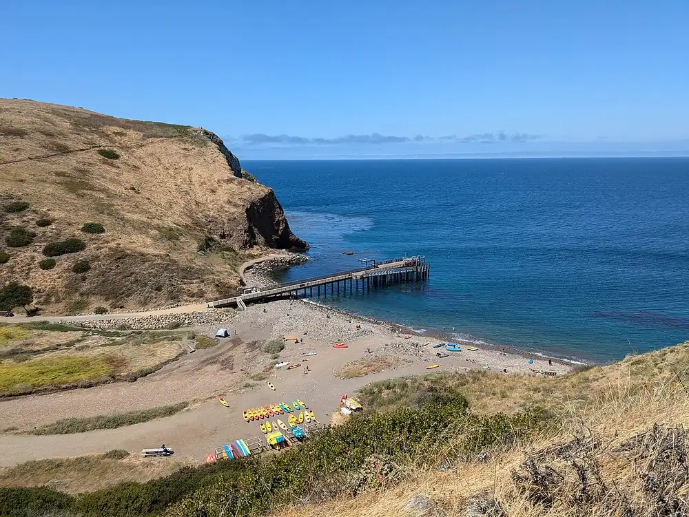

Scorpion Anchorage — Santa Cruz Island
Channel Islands, Californie, États-Unis · kayak, snorkeling

Petite crique de galets du parc national des Channel Islands, où accostent les bateaux venus de Ventura. Les falaises voisines sont creusées de grottes marines que l’on explore en kayak, et le kelp attire les poissons près du bord.
- Lieu
- Channel Islands, Californie, États-Unis
- Niveau
- Intermédiaire
- Activités
- kayak, snorkeling
- Type d'eau
- Mer / océan
- Coordonnées
- 34.05, -119.55 (position approximative du secteur)
Dangers à connaître
- Ressac dans les grottes marines, dangereux dès que la houle monte.
- Vent de nord-ouest souvent fort l’après-midi dans le chenal.
- Eau froide : combinaison conseillée pour le snorkeling.
Le conseil d'Ocean Buddy
Réserve la traversée et fais les grottes avec un guide agréé : l’île n’a ni boutique ni eau potable garantie, emporte tout pour la journée.
Ouvrir dans Ocean Buddy Télécharger sur l'App Store
Source : Fiche Ocean Buddy · septembre 2026 · à vérifier localement.